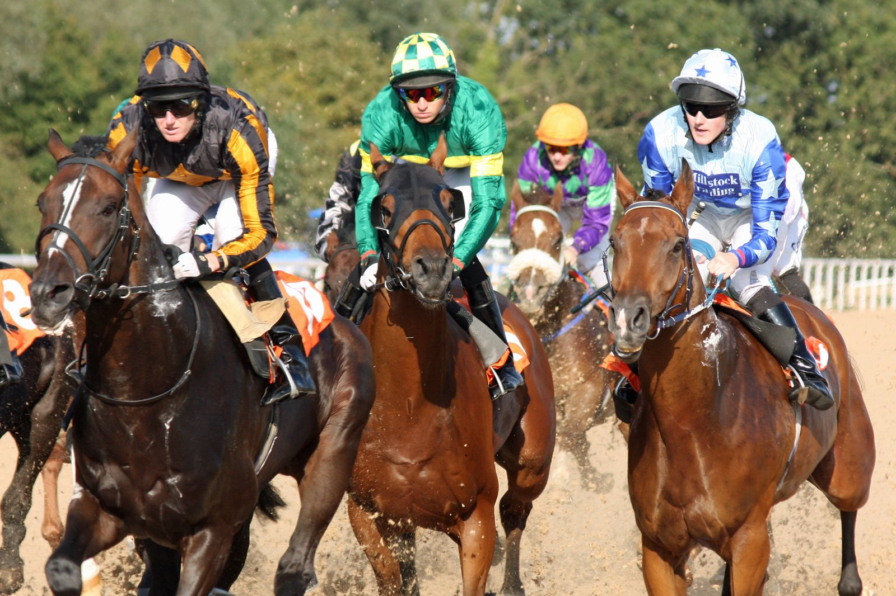

Ombudsman invierte el orden de 2025 y deja a Calandagan a tres cuerpos y tres cuartos en Ascot
Ombudsman, favorito a 5/4 con William Buick, se impuso en la Qatar Racing Champion Stakes (Grupo I, diez furlongs) de Ascot y devolvió a Calandagan la derrota de hace doce meses.

La revancha llegó en la recta y no dejó dudas: tres cuerpos y tres cuartos separaron a Ombudsman de Calandagan en la meta. Hace un año el orden fue el contrario, con Calandagan primero, Ombudsman segundo y Almaqam tercero. Los tres volvían a medirse en una salida corta pero de mucho nivel.
Solo seis tomaron la salida, y uno de ellos era liebre al servicio de Ombudsman. Calandagan no había alcanzado esta temporada el nivel del año pasado, y las apuestas se inclinaron por el subcampeón de 2025.
Devil's Advocate llevó el tren por delante de Bay City Roller, segundo en el Prix de l'Arc y de vuelta a la pista apenas quince días después de correr en París. Ombudsman viajó tercero. Por su exterior iba Constitution River, con Ryan Moore, muy pasado de vueltas. El orden apenas cambió hasta la recta.
Allí Bay City Roller tomó la cabeza por unos metros. Ombudsman lo superó enseguida, con Calandagan pegado a su costado tras recortar terreno. Cuando Buick le pidió, Ombudsman se marchó y mantuvo el galope hasta la raya, donde el jockey se puso de pie en los estribos para saludar a la grada. Bay City Roller, tercero, aguantó a casi dos cuerpos de Calandagan.
La lectura es sencilla: con todo el lote por delante desde el partidor, el favorito resolvió en cuanto se le soltó.
Buick explicó tras la carrera: «Ha sido otra cosa, pero ya lo había demostrado antes. En York creo que el terreno no era el adecuado, estaba más blando que hoy».
Por Martín Larrañeta